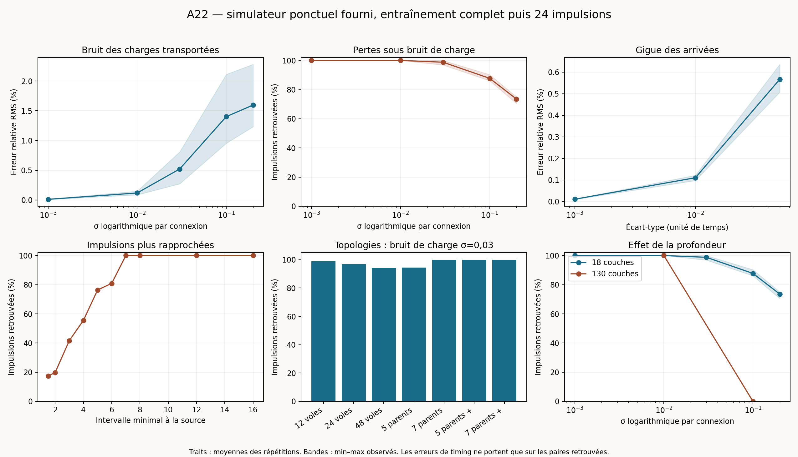

Étude exploratoire du simulateur simulate.py fourni dans A22_point_simulator_kit.zip. Aucun moteur certifié importé. 174 simulations terminées dans le domaine du solveur ; 0 essais arrêtés par une garde explicite.

Après un entraînement sans bruit, à 18 couches, σ=0,01 sur les charges transportées donne 100 % des impulsions retrouvées et 0,118 % d’erreur relative RMS moyenne ; σ=0,03 donne 98,78 % et 0,522 % ; σ=0,10 donne 87,73 % et 1,401 %. Six graines par niveau. La gigue seule jusqu’à un écart-type de 0,05 conserve toutes les impulsions dans ces essais, avec environ 0,567 % d’erreur RMS.
À 130 couches, les deux réalisations à σ=0,01 conservent toutes les impulsions ; les deux réalisations à σ=0,10 n’en transmettent aucune à la sortie. La première couche sans émission de test est respectivement 103 et 100. Les pertes se propagent et s’aggravent avec la profondeur : il n’y a pas une rupture instantanée commune à tout le réseau.
Sans bruit, l’intervalle minimal 7 conserve les 24 impulsions dans toutes les voies de référence ; à 6, la fraction retrouvée est 80,90 %. Les formes alternant entre ±10 % de décroissance, à charge intégrale constante, conservent les impulsions et donnent environ 0,188 % d’erreur RMS. Les topologies testées sans bruit transmettent les mots complets dans leurs voies accessibles ; leur robustesse bruitée varie avec le graphe et la normalisation des gains.
Chaque essai repart des gains nominaux, q=0,1 et b=0,08 ; les 128 impulsions d'entraînement aux dates 8k sont entièrement simulées. Les mesures portent sur 24 impulsions supplémentaires à partir de 4096. Leurs intervalles répètent le motif 1, 1,1, 1,05, 1,2, 1, 1,15 multiplié par l'intervalle minimal indiqué. La source est uniquement la voie 0. Les paramètres auxiliaires restent nominaux par port. Aucun gain terminal n'est substitué à l'entraînement.
Impulsions retrouvées : fraction des couples (voie active de référence, étiquette source) produisant une émission unique. La référence est la même topologie avec 24 impulsions espacées et sans bruit. Mots complets : fraction des voies de référence retrouvant les 24 étiquettes exactement une fois, sans émission supplémentaire ; cette mesure ne signifie pas que leurs dates sont exactes. Erreur relative RMS : racine de la moyenne des carrés de (intervalle de sortie − intervalle de source) / intervalle de source, uniquement pour deux étiquettes source consécutives retrouvées une fois. Elle doit être lue avec les pertes, car une erreur faible parmi les survivantes ne signifie pas une transmission fidèle. Mesures au dernier étage, sauf indication contraire.
Pour les courbes, les traits indiquent les moyennes entre graines, les bandes les extrêmes observés. Six graines pour les séries principales à 18 couches ; trois pour le bruit dès l'entraînement ; deux pour chaque topologie bruitée et chaque amplitude à 130 couches. Les résultats détaillés, dont les nombres de paires appariées et les émissions ambiguës, figurent dans summary.csv.
Charges transportées : chaque impulsion de chaque connexion est multipliée indépendamment par exp(σZ−σ²/2), Z gaussien standard. La moyenne de la charge est conservée ; son coefficient de variation vaut sqrt(exp(σ²)−1), proche de σ aux niveaux étudiés. Cette impulsion modifiée est reçue à la fois par la principale et son auxiliaire ; les dates de seuil auxiliaires sont recalculées à partir des équations.
Gigue : variation uniforme, centrée, d'écart-type indiqué, indépendante par connexion et par impulsion. Un délai nominal de 0,1 est ajouté, suffisant pour garder tous les délais positifs (σ≤0,05). La référence de ces séries inclut ce même délai. Charge interne q : à chaque arrivée en mode prêt, saut uniforme centré d'écart-type 0,9σq ; projection à zéro si nécessaire. Il s'agit d'un protocole de perturbation impulsionnelle, pas d'un bruit blanc continu. Les autres équations restent celles du simulateur.
Le bruit affecte les impulsions de test dans les séries principales ; allnoise l'applique aussi pendant tout l'entraînement. Les séries joint combinent charges transportées et gigue.
| Essai | Voies de référence | Mots complets / voies accessibles | Impulsions retrouvées | Erreur relative RMS des intervalles | Mots complets |
|---|---|---|---|---|---|
| amp_0.001 (n=6) | 12 | — / — | 100 % | 0.01171 % | 100 % |
| amp_0.01 (n=6) | 12 | — / — | 100 % | 0.1182 % | 100 % |
| amp_0.03 (n=6) | 12 | — / — | 98.78 % | 0.5216 % | 70.83 % |
| amp_0.1 (n=6) | 12 | — / — | 87.73 % | 1.401 % | 0 % |
| amp_0.2 (n=6) | 12 | — / — | 73.55 % | 1.596 % | 0 % |
| jitter_0.001 (n=6) | 12 | — / — | 100 % | 0.01104 % | 100 % |
| jitter_0.01 (n=6) | 12 | — / — | 100 % | 0.1106 % | 100 % |
| jitter_0.05 (n=6) | 12 | — / — | 100 % | 0.5667 % | 100 % |
| q_0.001 (n=6) | 12 | — / — | 100 % | 0.01723 % | 100 % |
| q_0.03 (n=6) | 12 | — / — | 98.09 % | 0.732 % | 61.11 % |
| joint_0.01 (n=6) | 12 | — / — | 100 % | 0.1221 % | 100 % |
| joint_0.03 (n=6) | 12 | — / — | 97.4 % | 0.6209 % | 37.5 % |
| joint_0.1 (n=6) | 12 | — / — | 86.75 % | 1.528 % | 0 % |
| allnoise_0.01 (n=3) | 12 | — / — | 100 % | 0.1318 % | 100 % |
| allnoise_0.03 (n=3) | 12 | — / — | 100 % | 0.4383 % | 100 % |
| allnoise_0.1 (n=3) | 12 | — / — | 100 % | 0.6596 % | 100 % |
Effet de la préparation. Les séries où le bruit est présent pendant tout l’entraînement peuvent produire un état appris différent, plus robuste aux pulses testés. Les comparer aux séries où le bruit apparaît seulement après l’entraînement montre que la transition dépend aussi de l’histoire d’apprentissage ; ces petits échantillons ne prouvent pas un mécanisme général d’adaptation.
Anneaux de 12, 24 et 48 voies ; voisinages à 3, 5 ou 7 parents. Dans la comparaison à gain total constant, le parent central garde un gain initial de 1,2 et les autres se partagent 0,6. Les variantes added donnent 0,3 à chaque parent latéral, donc augmentent le gain total : elles isolent le choix de normalisation. Les nombres de voies accessibles sont calculés par le graphe depuis la source ; ils distinguent absence de chemin et échec de transmission. La fraction retrouvée sans bruit est définie relativement aux voies de référence de ce même graphe ; elle ne mesure donc pas, à elle seule, la couverture spatiale. Les connexions aléatoires choisissent sans remise 3 ou 5 parents dans la couche précédente, indépendamment pour chaque cellule et étage ; trois graphes par degré. Toutes les connexions vont vers l'avant, entre couches consécutives. Aucun cycle dirigé ni saut de couche n'est testé. La variante bruitée utilise σ=0,03 sur les charges transportées.
| Essai | Voies de référence | Mots complets / voies accessibles | Impulsions retrouvées | Erreur relative RMS des intervalles | Mots complets |
|---|---|---|---|---|---|
| parents5 | 12 | 12 / 12 | 100 % | 0 % | 100 % |
| parents5_added | 12 | 12 / 12 | 100 % | 0 % | 100 % |
| parents5_added_noisy_0 | 12 | 12 / 12 | 100 % | 0.2419 % | 100 % |
| parents5_added_noisy_1 | 12 | 12 / 12 | 100 % | 0.2284 % | 100 % |
| parents5_noisy_0 | 12 | 0 / 12 | 95.14 % | 0.8736 % | 0 % |
| parents5_noisy_1 | 12 | 0 / 12 | 93.75 % | 0.8712 % | 0 % |
| parents7 | 12 | 12 / 12 | 100 % | 0 % | 100 % |
| parents7_added | 12 | 12 / 12 | 100 % | 0 % | 100 % |
| parents7_added_noisy_0 | 12 | 12 / 12 | 100 % | 0.1547 % | 100 % |
| parents7_added_noisy_1 | 12 | 12 / 12 | 100 % | 0.1196 % | 100 % |
| parents7_noisy_0 | 12 | 12 / 12 | 100 % | 0.2169 % | 100 % |
| parents7_noisy_1 | 12 | 12 / 12 | 100 % | 0.2316 % | 100 % |
| random3_0 | 12 | 12 / 12 | 100 % | 0 % | 100 % |
| random3_0_noisy_0 | 12 | 12 / 12 | 100 % | 0.3092 % | 100 % |
| random3_0_noisy_1 | 12 | 0 / 12 | 95.83 % | 0.4798 % | 0 % |
| random3_1 | 12 | 12 / 12 | 100 % | 0 % | 100 % |
| random3_1_noisy_0 | 12 | 12 / 12 | 100 % | 0.2212 % | 100 % |
| random3_1_noisy_1 | 12 | 12 / 12 | 100 % | 0.2111 % | 100 % |
| random3_2 | 12 | 12 / 12 | 100 % | 0 % | 100 % |
| random3_2_noisy_0 | 12 | 12 / 12 | 100 % | 0.3139 % | 100 % |
| random3_2_noisy_1 | 12 | 12 / 12 | 100 % | 0.363 % | 100 % |
| random5_0 | 12 | 12 / 12 | 100 % | 0 % | 100 % |
| random5_0_noisy_0 | 12 | 0 / 12 | 91.67 % | 0.6285 % | 0 % |
| random5_0_noisy_1 | 12 | 0 / 12 | 91.67 % | 0.3423 % | 0 % |
| random5_1 | 12 | 12 / 12 | 100 % | 0 % | 100 % |
| random5_1_noisy_0 | 12 | 12 / 12 | 100 % | 0.3509 % | 100 % |
| random5_1_noisy_1 | 12 | 12 / 12 | 100 % | 0.3156 % | 100 % |
| random5_2 | 12 | 12 / 12 | 100 % | 0 % | 100 % |
| random5_2_noisy_0 | 12 | 1 / 12 | 96.18 % | 1.041 % | 8.333 % |
| random5_2_noisy_1 | 12 | 0 / 12 | 95.83 % | 0.351 % | 0 % |
| ring24 | 24 | 24 / 24 | 100 % | 1.077e-05 % | 100 % |
| ring24_noisy_0 | 24 | 24 / 24 | 100 % | 0.6253 % | 100 % |
| ring24_noisy_1 | 24 | 8 / 24 | 93.92 % | 0.5882 % | 33.33 % |
| ring48 | 37 | 37 / 37 | 100 % | 0.0001531 % | 100 % |
| ring48_noisy_0 | 37 | 29 / 37 | 98.09 % | 0.8543 % | 78.38 % |
| ring48_noisy_1 | 37 | 12 / 37 | 90.32 % | 0.8132 % | 32.43 % |
Les intervalles minimaux testés sont 1,5, 2, 3, 4, 5, 6, 7, 8, 12 et 16. Le bruit éventuel reste à σ=0,03. Pour les formes d'impulsion, seuls les pulses de test de la source changent ; les émissions internes restent canoniques. La constante de décroissance est multipliée par 0,9, 0,95, 1,05 ou 1,1, fixe ou alternée. La durée varie séparément. La charge intégrale d'une impulsion source reste exactement 0,75 grâce à une renormalisation de l'amplitude. Une forme fixe peut déplacer la latence sans déformer les intervalles ; l'alternance teste une variation d'une impulsion à la suivante.
| Essai | Voies de référence | Mots complets / voies accessibles | Impulsions retrouvées | Erreur relative RMS des intervalles | Mots complets |
|---|---|---|---|---|---|
| depth130 | 12 | 12 / 12 | 100 % | 0 % | 100 % |
| depth130_amp_0.01_0 | 12 | 12 / 12 | 100 % | 0.252 % | 100 % |
| depth130_amp_0.01_1 | 12 | 12 / 12 | 100 % | 0.2275 % | 100 % |
| depth130_amp_0.1_0 | 12 | 0 / 12 | 0 % | — % | 0 % |
| depth130_amp_0.1_1 | 12 | 0 / 12 | 0 % | — % | 0 % |
| depth130_delay | 12 | 12 / 12 | 100 % | 0 % | 100 % |
| depth130_joint_0 | 12 | 12 / 12 | 100 % | 1.013 % | 100 % |
| depth130_joint_1 | 12 | 0 / 12 | 95.83 % | 0.9087 % | 0 % |
| gap_1.5 | 12 | 0 / 12 | 17.36 % | — % | 0 % |
| gap_1.5_noisy_0 | 12 | 0 / 12 | 16.67 % | — % | 0 % |
| gap_1.5_noisy_1 | 12 | 0 / 12 | 19.1 % | — % | 0 % |
| gap_12 | 12 | 12 / 12 | 100 % | 0 % | 100 % |
| gap_12_noisy_0 | 12 | 9 / 12 | 98.96 % | 0.823 % | 75 % |
| gap_12_noisy_1 | 12 | 3 / 12 | 96.88 % | 1.122 % | 25 % |
| gap_16 | 12 | 12 / 12 | 100 % | 0 % | 100 % |
| gap_16_noisy_0 | 12 | 9 / 12 | 98.96 % | 0.6171 % | 75 % |
| gap_16_noisy_1 | 12 | 3 / 12 | 96.88 % | 0.8416 % | 25 % |
| gap_2 | 12 | 0 / 12 | 19.79 % | — % | 0 % |
| gap_2_noisy_0 | 12 | 0 / 12 | 17.36 % | — % | 0 % |
| gap_2_noisy_1 | 12 | 0 / 12 | 20.83 % | — % | 0 % |
| gap_3 | 12 | 0 / 12 | 41.67 % | 26.2 % | 0 % |
| gap_3_noisy_0 | 12 | 0 / 12 | 48.26 % | 11.16 % | 0 % |
| gap_3_noisy_1 | 12 | 0 / 12 | 44.79 % | 10.22 % | 0 % |
| gap_4 | 12 | 0 / 12 | 55.56 % | 2.243 % | 0 % |
| gap_4_noisy_0 | 12 | 0 / 12 | 55.56 % | 2.029 % | 0 % |
| gap_4_noisy_1 | 12 | 0 / 12 | 55.56 % | 2.357 % | 0 % |
| gap_5 | 12 | 0 / 12 | 76.39 % | 0.783 % | 0 % |
| gap_5_noisy_0 | 12 | 0 / 12 | 76.39 % | 1.101 % | 0 % |
| gap_5_noisy_1 | 12 | 0 / 12 | 76.39 % | 0.8566 % | 0 % |
| gap_6 | 12 | 0 / 12 | 80.9 % | 1.036 % | 0 % |
| gap_6_noisy_0 | 12 | 0 / 12 | 82.29 % | 1.388 % | 0 % |
| gap_6_noisy_1 | 12 | 0 / 12 | 83.33 % | 1.174 % | 0 % |
| gap_7 | 12 | 12 / 12 | 100 % | 0 % | 100 % |
| gap_7_noisy_0 | 12 | 9 / 12 | 98.96 % | 1.373 % | 75 % |
| gap_7_noisy_1 | 12 | 3 / 12 | 96.88 % | 1.914 % | 25 % |
| gap_8 | 12 | 12 / 12 | 100 % | 0 % | 100 % |
| gap_8_noisy_0 | 12 | 9 / 12 | 98.96 % | 1.237 % | 75 % |
| gap_8_noisy_1 | 12 | 3 / 12 | 96.88 % | 1.686 % | 25 % |
| shape_alternating_0.9 | 12 | 12 / 12 | 100 % | 0.1881 % | 100 % |
| shape_alternating_0.95 | 12 | 12 / 12 | 100 % | 0.09413 % | 100 % |
| shape_alternating_1.05 | 12 | 12 / 12 | 100 % | 0.09413 % | 100 % |
| shape_alternating_1.1 | 12 | 12 / 12 | 100 % | 0.1881 % | 100 % |
| shape_fixed_0.9 | 12 | 12 / 12 | 100 % | 0 % | 100 % |
| shape_fixed_0.95 | 12 | 12 / 12 | 100 % | 0 % | 100 % |
| shape_fixed_1.05 | 12 | 12 / 12 | 100 % | 0 % | 100 % |
| shape_fixed_1.1 | 12 | 12 / 12 | 100 % | 0 % | 100 % |
| width_0.9 | 12 | 12 / 12 | 100 % | 0 % | 100 % |
| width_1.05 | 12 | 12 / 12 | 100 % | 0 % | 100 % |
| width_1.1 | 12 | 12 / 12 | 100 % | 0 % | 100 % |
Le simulateur fourni retrouve les 21 302 événements historiques des 18 premières couches avec un écart maximal de 1,62×10⁻¹¹. Son extension retrouve les mêmes 21 302 événements avec un écart maximal de 2.71e-11. Un contrôle indépendant par SciPy solve_ivp vérifie 27 premiers franchissements avec 3, 5 et 7 parents, trois décroissances et trois durées : écart maximal 3.44e-15. Ce contrôle local ne valide pas tous les chemins hybrides de la campagne.
Le fichier original est conservé ; extension.diff décrit les changements : nombre de ports variable, réponse analytique à chaque impulsion exponentielle modifiée, seuil auxiliaire recalculé, et perturbations explicites. La réserve E n'est pas intégrée, comme dans le kit. Les conclusions s'appliquent à ce simulateur ponctuel et à ces protocoles ; elles ne constituent ni une preuve pour toutes les réalisations, ni une certification du modèle à bruit continu ou à entrée arbitraire.
Un arrêt du solveur est rapporté séparément ; il n'est pas compté comme extinction physique. Le solveur exige la régénération de l'auxiliaire entre deux pulses d'un port et l'absence de chevauchement entre son courant brut et son erreur différée. Une forme trop longue peut violer cette dernière restriction.
[]
Python 3 ; bibliothèque standard pour les simulations ; NumPy, SciPy et Matplotlib pour validation et rapport. Depuis le dossier extrait : python build_extension.py, python run_selected.py, python validate.py, python make_report.py. Les résultats existants sont réutilisés ; déplacer output/ pour recalculer. Les fichiers JSON contiennent les graphes, émissions de test et états avant/après. Les événements historiques de référence sont inclus dans le dossier voisin A22_point_simulator_kit.